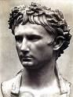
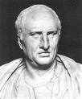
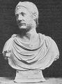

Superstition and Scientism
"Any study in depth is a study in breadth."
Problems in understanding arise when we apply the methods of one kind of information to another. The application of imagination to the empirical is called superstition; the application of scientific method to the arts is called scientism. Teutonic specialization is based on the belief that a phenomenon is more completely grasped when studied in depth, isolated from the irrelevance of surrounding data. I.e. the human mind being limited in scope, it must be narrowly focused on specialist areas of information; thus the division of the humanities into separate university departments, as if Literature could be understood apart from History, Religion, Psychology and Philosophy.
Specialization is obviously useful and necessary, but as the dominant technique of scientific method it has proven a snare and a delusion for both science and the humanities, for it is a habit of mind with a bias for distinctions rather than connections, and that posits boundaries where they do not exist. Constrained by these artificial boundaries, it would have been impossible for Einstein to intuit the dynamic relationship between time and space, and between energy and matter, for historians to determine the connection between the bicycle and the airplane, or discover the cause and effect relationship between the stirrup with the rise of the feudal system (UM, Chapter 19).
 |
 |
 |
|||
| Augustus | Cicero | Hannibal |
For example, Edward Gibbon drew the connection between Augustus Caesar's seizure of power and the fall of the Roman Empire:
The tender respect of Augustus for a free constitution which he had destroyed, can only be explained by an attentive consideration of the character of that subtle tyrant. A cool head, an unfeeling heart, and a cowardly disposition, prompted him at the age of nineteen to assume the mask of hypocrisy, which he never afterwards laid aside. With the same hand, and probably with the same temper, he signed the proscription of Cicero, and the pardon of Cinna. His virtues, and even his vices, were artificial; and according to the various dictates of his interest, he was at first the enemy, and at last the father, of the Roman world. (Edward Gibbon, The Decline and Fall of the Roman Empire)
But it took an Arnold Toynbee, whose broader learning transcended mere history, to perceive the more important connection was with Hannibal's destruction of Roman freehold farming during the Second Punic War, and the rise of a slave-based plantation system, economy and social order: slavery introduced a subtle but lethal corruption in both slave and master, a kind of mutual dependency and passivity that evoked the worst tendencies in both, and that created the psychological conditions for Octavian's seizure of power and the irreversible decline that followed.
Every Roman was surrounded by slaves. The slave and his psychology flooded ancient Italy, and every Roman became inwardly, and of course unwittingly, a slave. Because living constantly in the atmosphere of slaves, he became infected through the unconscious with their psychology. No one can shield himself from such an influence (Carl Jung, Contributions to Analytical Psychology, London, 1928).
What is true of history is also as true of the poets. To isolate the essence of poetic meter, a specialist in prosody will typically overlook the interplay of meter with other elements of verse (alliteration, rhyme, assonance), and with thought (thematic material like thanatopsis) and imagery, to concentrate exclusively on the poet's rhythmic patterns. While this reductive method is suitable for objective data, esthetic intuitions are constitutionally resistant to analysis. In an attempt to refine the granularity of his investigation (by isolating pure meter), the expert is actually stripping meter of all meaning, because its contribution is inseparable from the other elements that produce a poem's emotional effect, and cannot be understood apart from them. Of thought processes in general, Benedetto Croce observed:
"Those concepts that are found mingled with intuitions are no longer concepts, in so far as they are really mingled and fused, for they have lost all independence and autonomy. They have been concepts, but have now become simple elements of intuitions."
Note how the lilting, almost hypnotic, iambic meter of
The woods are lovely, dark, and deep,
But I have promises to keep,
And miles to go before I sleep,
And miles to go before I sleep.
works with alliteration (dark and deep), rhyme (deep, keep, sleep), the repetition of the last line, and symbolism of the snowy shroud, to fuse the ineffable beauty of the falling snow with the desire for oblivion. These elements merge seamlessly to transform a longing for death (cancelled by the claims of duty) to a poignant emotional epiphany.